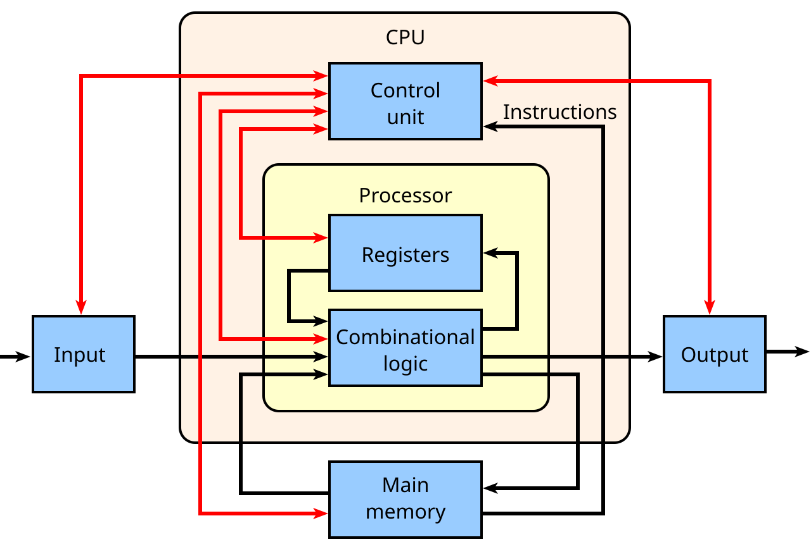
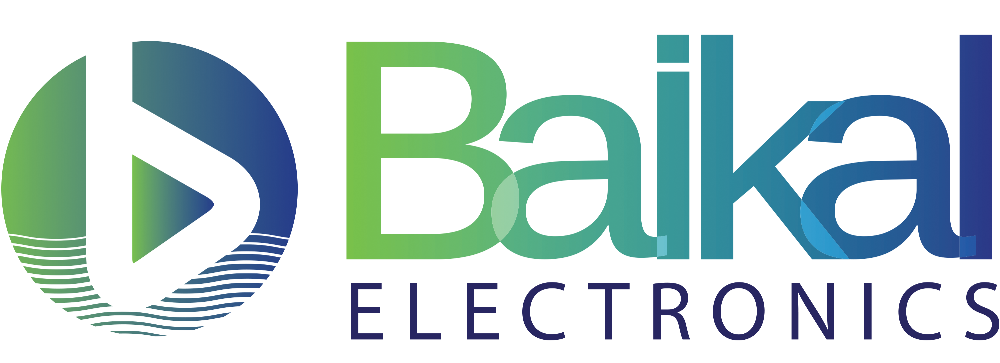
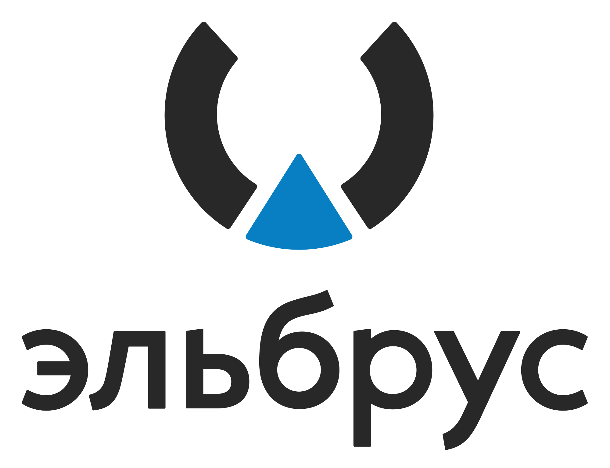
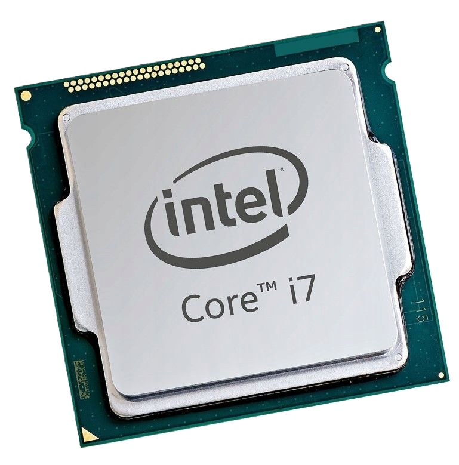
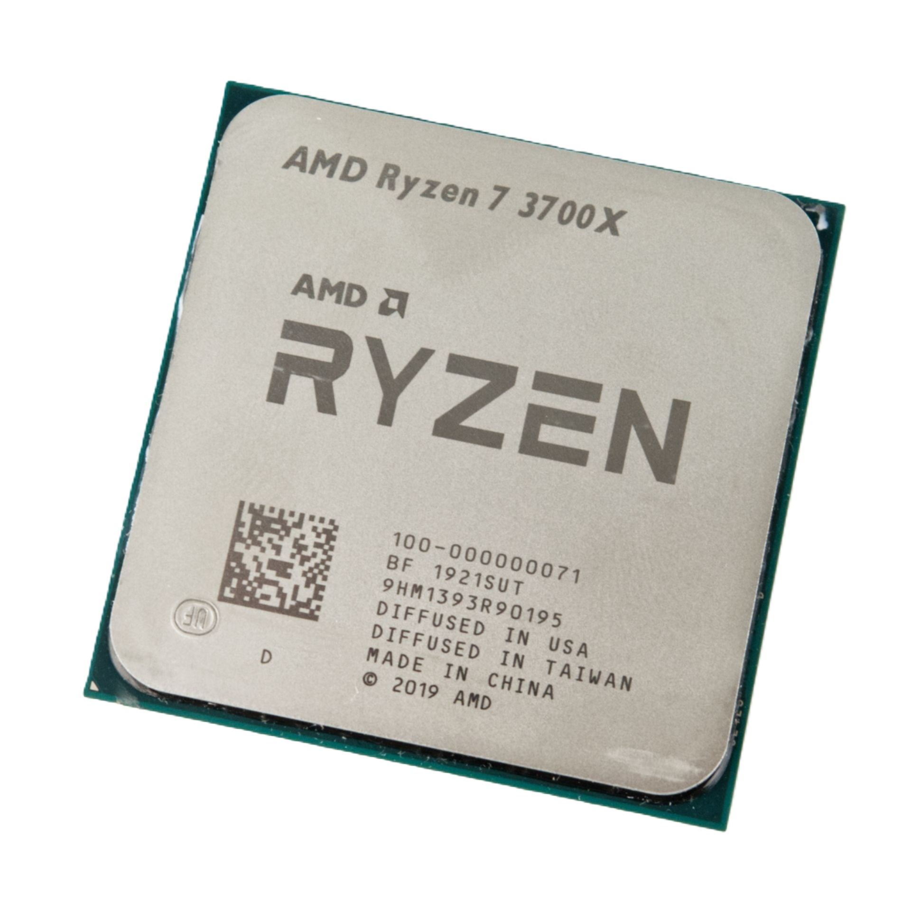
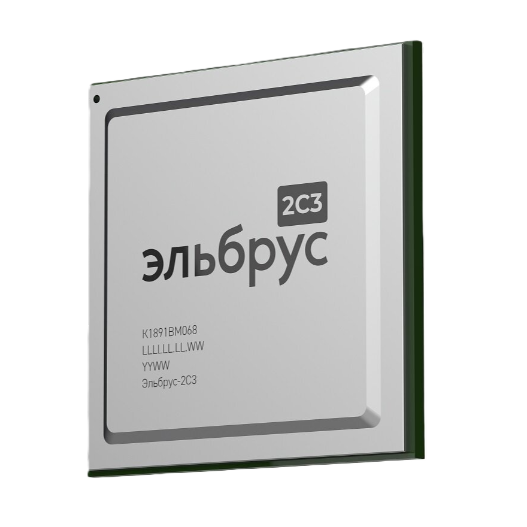
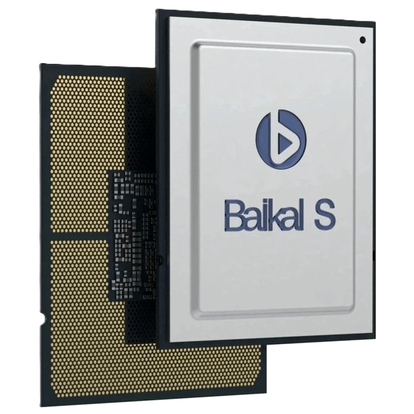

Что такое процессор?
🧠 "Мозг" компьютера
Процессор (Central Processing Unit, CPU) — это главное вычислительное устройство компьютера, которое выполняет команды программ и управляет всеми остальными компонентами системы.

⚡ Как работает процессор?
Процессор выполняет миллиарды операций в секунду: Fetch (выборка команд) → Decode (декодирование) → Execute (выполнение) → Writeback (запись результата).

Структурная схема базового однопроцессорного компьютера. Черными линиями обозначен поток данных, красными — поток управления; стрелки указывают направление потока.
📊 Основные функции CPU
- Выполнение инструкций — интерпретация и выполнение машинного кода программ
- Управление памятью — обращение к ОЗУ, ПЗУ и кэш-памяти
- Обработка данных — вычисления и возврат результатов
- Управление системой — координация работы HDD, GPU, RAM и других компонентов
🏭 Как изготавливают процессоры?
Нажмите на карточку, чтобы узнать о сложном пути от песка до чипа
Производство🔬
🏭 Основные производители
Нажмите на карточку, чтобы узнать подробнее
Intel
Крупнейший производитель
🇺🇸 СШАAMD
Главный конкурент Intel
🇺🇸 США

Российские разработки
Импортозамещение
🇷🇺 Россия📈 Ключевые характеристики
Нажмите на карточку, чтобы узнать подробнее
🔢 Количество ядер
⚡ Тактовая частота
💾 Кэш-память
🔬 Техпроцесс
🏗️ Архитектура
🌡️ TDP
🔌 Сокеты процессоров
Нажмите на карточку, чтобы узнать подробнее
🟦 Сокеты Intel
🟥 Сокеты AMD
🇷🇺 Сокеты РФ
Отечественные процессоры: подробный обзор
🔷 Эльбрус (АО «МЦСТ»)
- Эльбрус-8СВ — 8 ядер, 1.5 ГГц, 28 нм, производительность ~250 Гфлопс
- Эльбрус-16С — 16 ядер, 2.0 ГГц, 16 нм (в разработке)
- Эльбрус-2С+ — 2 ядра для встраиваемых систем
- Архитектура VLIW (очень длинная команда), собственная система команд «Эльбрус»
🔶 Байкал (АО «Байкал Электроникс»)
- Байкал-М — 8 ядер ARM Cortex-A57, 1.5 ГГц, 28 нм, TDP 35 Вт
- Байкал-С — 48 ядер ARM, 2.0 ГГц (серверный процессор)
- Байкал-Л — 4 ядра, для ноутбуков и планшетов
- Совместимость с Linux, поддержка аппаратной виртуализации
🔹 Скиф и Комдив (НИИСИ РАН)
- Скиф-1 — 4 ядра, архитектура MISC/MIPS, для встраиваемых систем
- Комдив-64 — 64-битный ARM-совместимый процессор
- Кортес-М — микроконтроллеры для защищённых систем
⚡ Важно: Российские процессоры уступают по производительности Intel/AMD, но активно развиваются в рамках программ импортозамещения. Основное применение — государственный сектор, оборонная промышленность и критическая инфраструктура.
💡 Как выбрать процессор?
📌 По назначению
Процессоры делятся на несколько типов в зависимости от задач, для которых они созданы:
- Универсальные — для большинства компьютеров и рабочих станций (Intel Core, AMD Ryzen).
- Серверные — с большим количеством ядер и потоков, для высоких нагрузок и баз данных (Intel Xeon, AMD EPYC, Байкал-С).
- Мобильные — энергоэффективные, для смартфонов и ноутбуков (ARM, Intel Core Mobile).
- Встраиваемые — для конкретных задач в бытовой технике, автомобилях, системах сигнализации (Эльбрус-2С+, Скиф-1).
- Для офиса/интернета: Intel Core i3 / AMD Ryzen 3
- Для игр: Intel Core i5/i7 / AMD Ryzen 5/7 (важна частота и кэш)
- Для монтажа и 3D: Intel Core i7/i9 / AMD Ryzen 7/9 (больше ядер = лучше)
- Для сервера: Intel Xeon / AMD EPYC / Байкал-С
- Для импортозамещения: Эльбрус-8СВ / Байкал-М
⚠️ Важные моменты при выборе
- Проверьте совместимость с материнской платой (сокет, чипсет)
- Убедитесь, что блок питания имеет достаточную мощность
- Для мощных CPU потребуется хорошее охлаждение
- Российские процессоры требуют специального ПО (редкие дистрибутивы Linux)
📊 Сравнение современных процессоров
| Модель | Ядра/Потоки | Макс. частота | Кэш L3 | TDP | Сокет | Цена |
|---|---|---|---|---|---|---|
| Intel Core i9-14900K | 24/32 | 6.0 ГГц | 36 МБ | 125W | LGA1700 | ~$600 |
| Intel Core i7-14700K | 20/28 | 5.6 ГГц | 33 МБ | 125W | LGA1700 | ~$400 |
| Intel Core i5-14600K | 14/20 | 5.3 ГГц | 24 МБ | 125W | LGA1700 | ~$300 |
| AMD Ryzen 9 7950X | 16/32 | 5.7 ГГц | 64 МБ | 170W | AM5 | ~$550 |
| AMD Ryzen 7 7800X3D | 8/16 | 5.0 ГГц | 96 МБ | 120W | AM5 | ~$450 |
| AMD Ryzen 5 7600X | 6/12 | 5.3 ГГц | 32 МБ | 105W | AM5 | ~$250 |
| Эльбрус-8СВ | 8/8 | 1.5 ГГц | 16 МБ | 65W | Собств. | ~$3000 |
| Байкал-М | 8/8 | 1.5 ГГц | 8 МБ | 35W | BGA | ~$500 |
🚀 Будущее процессоров
Нажмите на карточку, чтобы узнать подробнее
⚛️ 2 нм и меньше
🧬 3D-компоновка
🤖 AI-ускорители
🔗 Гетерогенные
🇷🇺 Россия
🖼️ Фотогалерея процессоров



